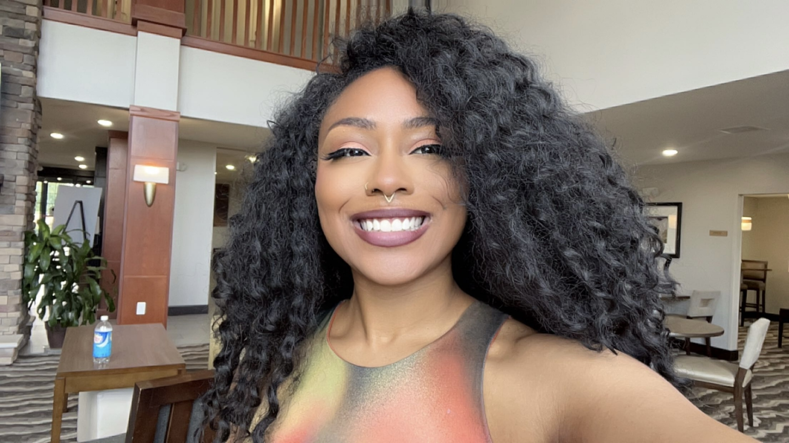

Jazmyn Ervins

Summary
Creative and detail-oriented professional with a background
in fashion design, blending artistic vision with technical expertise.
Experienced in product development, trend analysis, and user-centered
design. Currently expanding skills through UX/UI design and programming
studies, aiming to transition into digital product design and technology-driven roles.
Passionate about creating intuitive, beautiful experiences that connect with diverse audiences.
Work Experience
- Sweet Flower - Sales Associate
01/2023 - 06/2024
Assisted customers with product selection by providing knowledgeable
recommendations based on their needs. Handled point-of-sale transactions,
maintained inventory accuracy, ensured compliance with state regulations,
and supported daily store operations in a fast-paced, customer-focused environment.
- Black Halo - Associate Designer
08/2018 - 11/2022
Supported the design team in creating seasonal collections by developing sketches,
technical flats, and garment specifications. Assisted with fabric sourcing, sample
coordination, and fittings, while collaborating closely with production and merchandising
teams. Contributed to trend research and design innovation, helping to maintain brand
identity and market relevance.
Education
- Cal Tech UX/UI Bootcamp (04/2025-present)
- Udemy Full Stack Web Development Bootcamp (12/2024 - present)
- Politecnico di Milano, International B.F.A. Women's Sportswear (09/2016 - 05/2018)
- Fashion Institute of Technology, A.A.S. FAshion Design (01/2015 - 06/2016)
- Virginia Tech, B.S. Apparel Product Development (09/2010 - 12/2014)
Skills
- Adobe Suites
- Figma
- SketchUp
- HTML
- Sewing, Draping, Patternmaking
- Sketching
Contact Me
My Hobbies